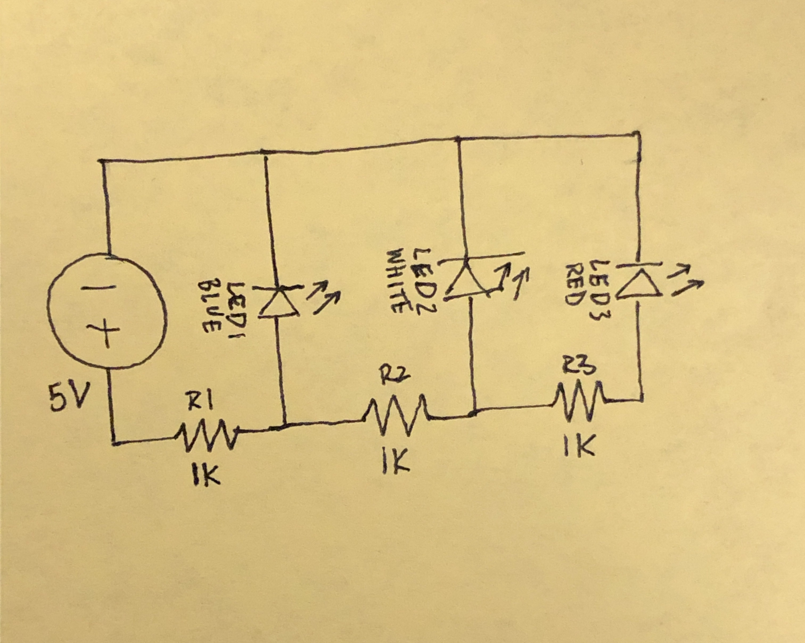
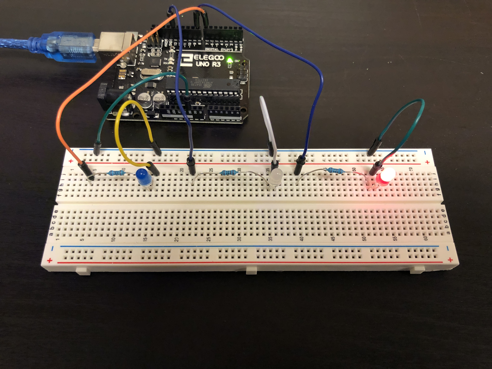

Arsh's Assignment 1!

Circuit in operation

Circuit diagram

The circuit itself
// the setup function runs once when you press reset or power the board
void setup() {
// initialize digital pin LED_BUILTIN as an output.
pinMode(LED_BUILTIN, OUTPUT);
pinMode(8, OUTPUT);
pinMode(7, OUTPUT);
}
// the loop function runs over and over again forever
void loop() {
digitalWrite(LED_BUILTIN, HIGH); // turn the LED on (HIGH is the voltage level)
delay(200); // wait for a second
digitalWrite(LED_BUILTIN, LOW); // turn the LED off by making the voltage LOW
delay(200); // wait for a second
digitalWrite(8, HIGH);
delay(200);
digitalWrite(8, LOW);
delay(200);
digitalWrite(7, HIGH);
delay(200);
digitalWrite(7, LOW);
delay(200);
}
Arduino code snippet